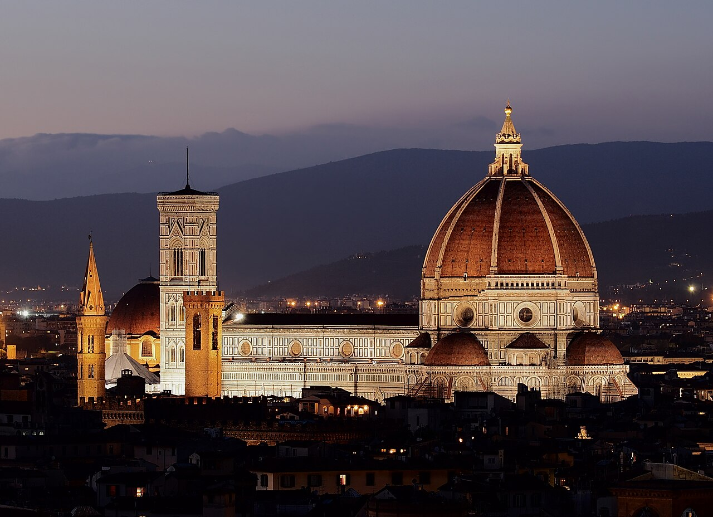

Рим
Місто, де давня історія зустрічається з сучасним життям. Колізей, площа Святого Петра та смачна паста — усе це Рим.
ДетальнішеНевеликий щоденник про три міста, у яких ми залишили часточку серця.
Італія вражає не лише смачною їжею та теплою погодою. Кожне місто тут має свій характер: Рим — величний і шумний, Флоренція — мистецька та спокійна, а Венеція — казкова й незвичайна. У цьому блозі ми зібрали найяскравіші спогади з нашої поїздки.
Місто, де давня історія зустрічається з сучасним життям. Колізей, площа Святого Петра та смачна паста — усе це Рим.
Детальніше
Батьківщина Ренесансу, вузьких вуличок і неймовірних краєвидів. Тут хочеться ходити повільно й роздивлятися кожну деталь.
Детальніше
Місто на воді, де замість доріг — канали, а замість автомобілів — гондоли. Атмосфера, яку неможливо переплутати ні з чим.
Детальніше| Місто | Кращий час | Днів | Головне враження |
|---|---|---|---|
| Рим | Квітень — травень | 3–4 | Колізей і вечірні вулички |
| Флоренція | Травень — червень | 2 | Купол Дуомо та вид із пагорба |
| Венеція | Вересень — жовтень | 2 | Прогулянка Великим каналом |
Короткий відеоогляд міст, які надихнули нас на цю поїздку.